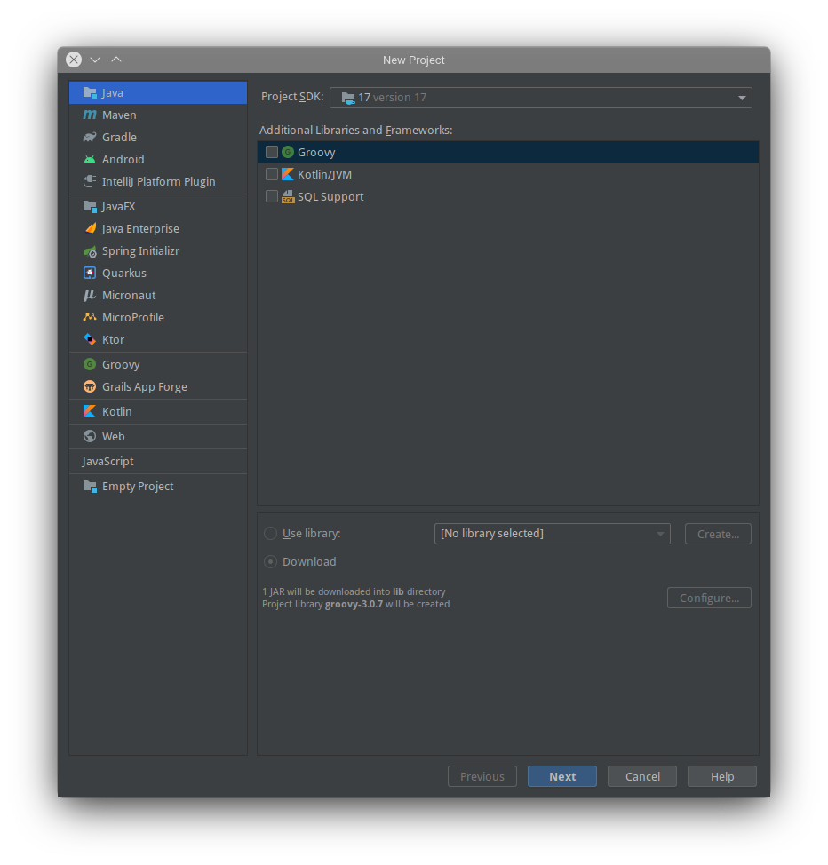
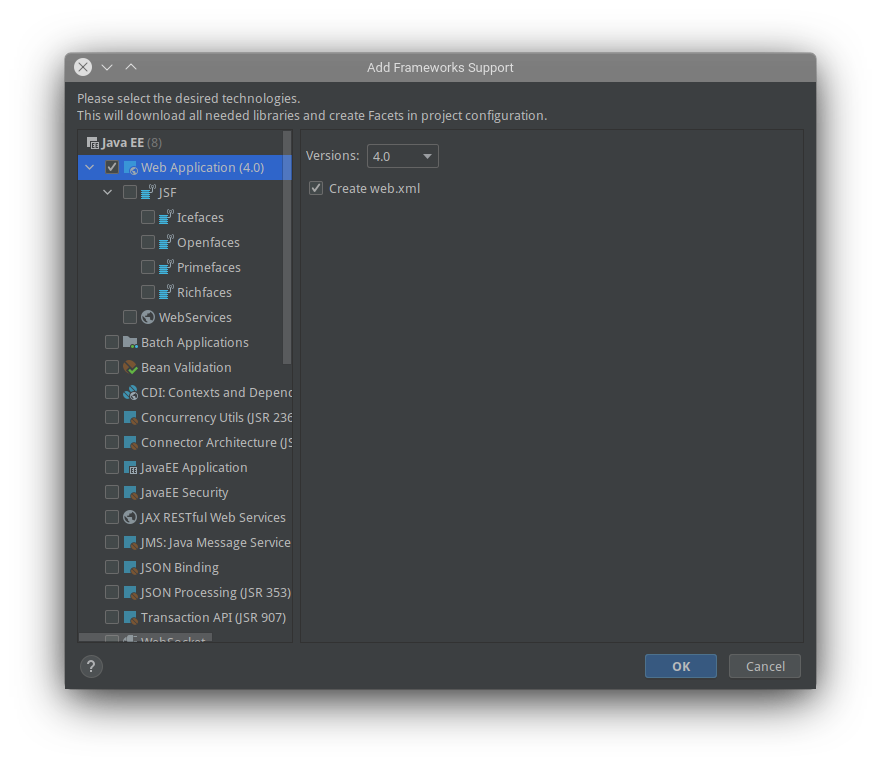
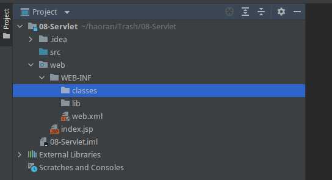
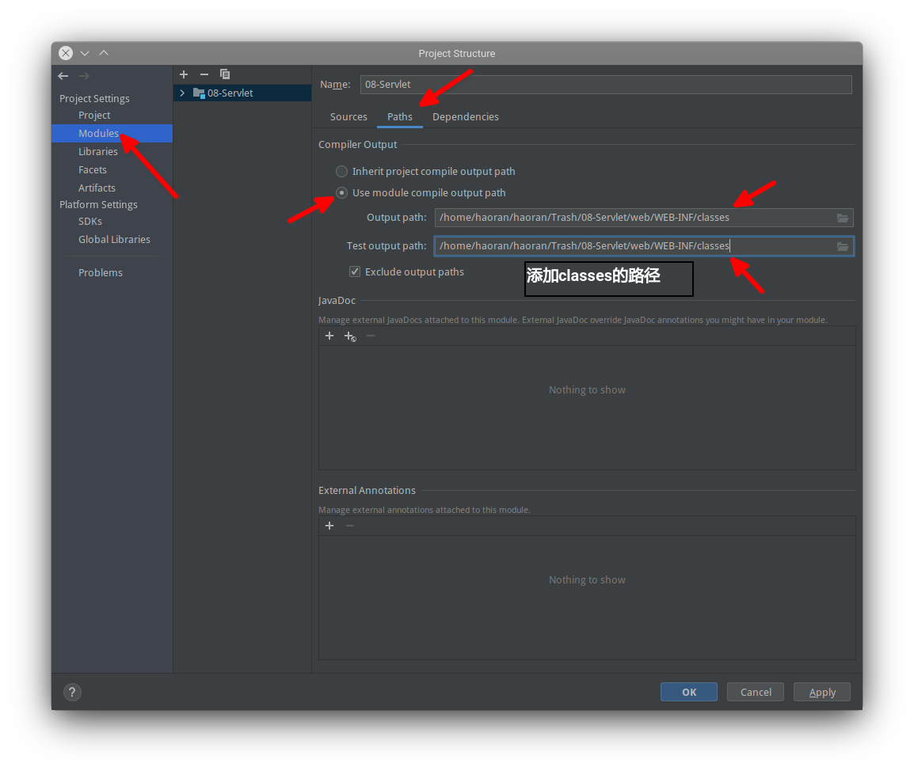
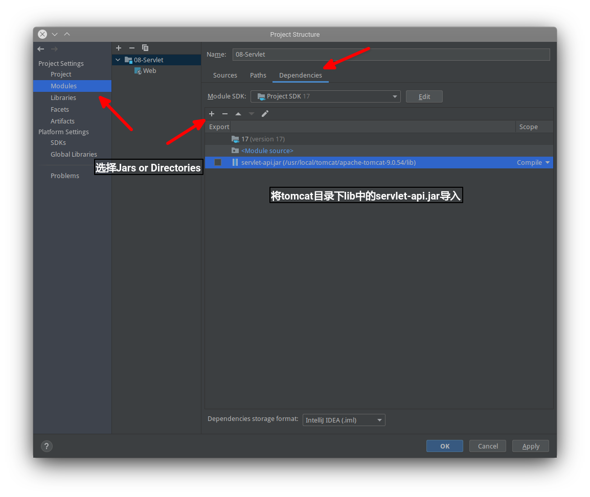
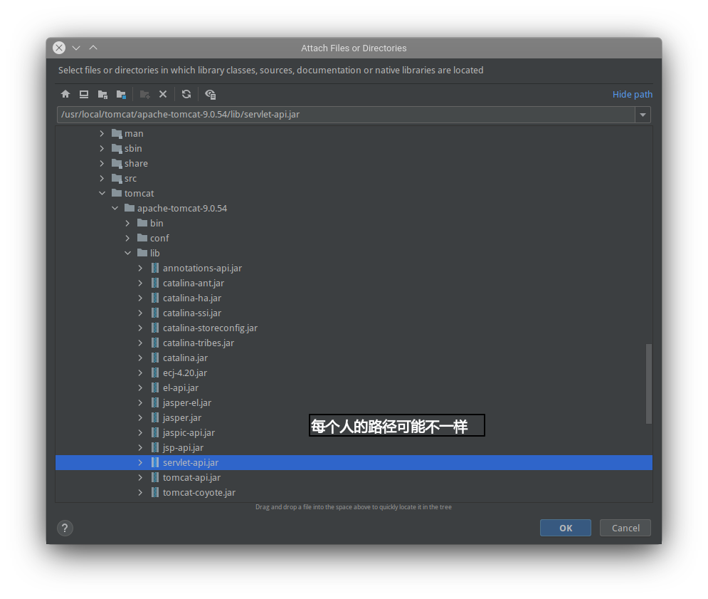
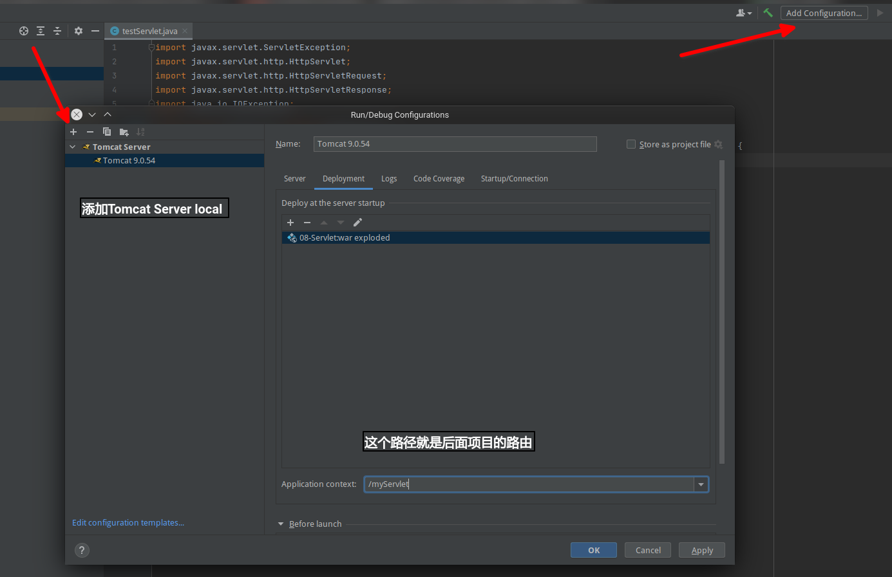
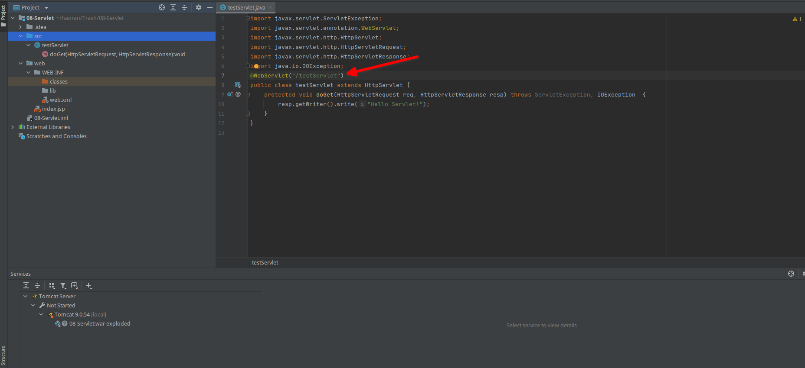
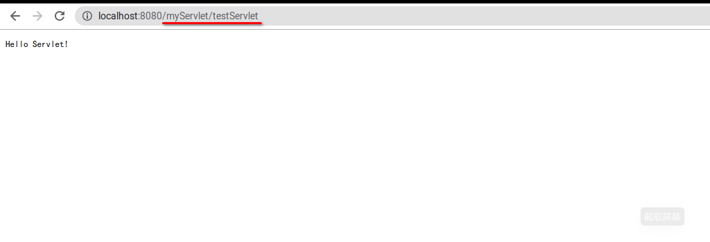

创建第一个Servlet项目
创建一个Java项目

在项目名上右键选择 Add Framework Support，在弹出的窗口中选择 Web Application

在WEB-INF 文件夹下创建 classes、lib 文件夹

Project Structure 中将 classes 文件夹配置到项目中

导入servlet需要的支持包
 
配置 tomcat 服务器

配置访问注释以及书写页面

还可以使用 web.xml 的方法配置 url 映射。
<?xml version="1.0" encoding="UTF-8"?> <web-app version="2.5" xmlns="http://java.sun.com/xml/ns/javaee" xmlns:xsi="http://www.w3.org/2001/XMLSchema-instance" xsi:schemaLocation="http://java.sun.com/xml/ns/javaee http://java.sun.com/xml/ns/javaee/web-app_2_5.xsd"> <servlet> <servlet-name>WelcomeServlet</servlet-name> <servlet-class>servlets.WelcomeServlet</servlet-class> </servlet> <servlet-mapping> <servlet-name>WelcomeServlet</servlet-name> <url-pattern>/servlets/WelcomeServlet</url-pattern> </servlet-mapping> </web-app>
这里
<servlet-name>WelcomeServlet</servlet-name>可以自己命名，不一定要与原文件名字一样，但是两个 servlet-name 名字必须要相同；同时，rul-pattern 中也不一定是 Servlet 的包路径，只是为了方便，一般使用的都是包路径。
访问成功
